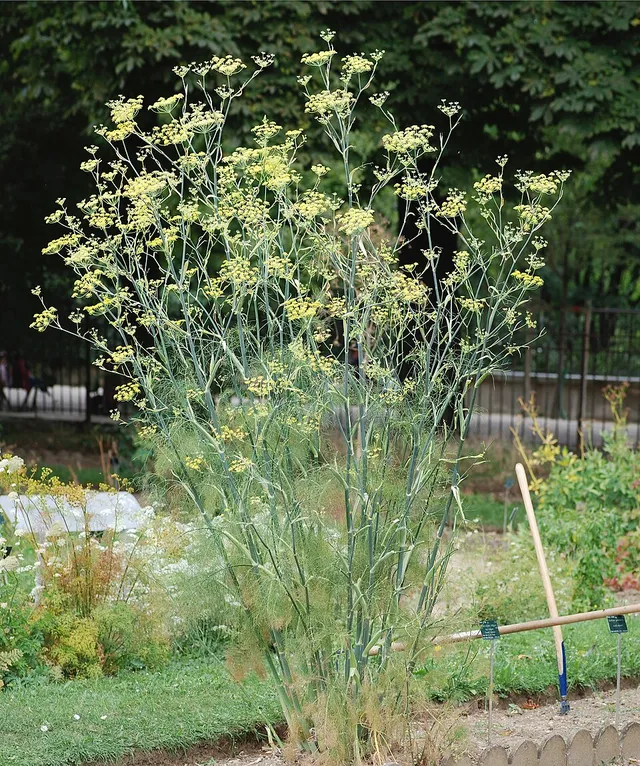

Wild fennel
Wild fennel is a wild green you can forage from August to December in Temperate south-east, South-west and Subtropical east coast. Weedy, aniseed-scented plant with feathery leaves and yellow umbels on roadsides.

When is wild fennel in season in Australia?
Wild fennel is usually in season August to December. Timing shifts with weather, latitude and altitude.
Where does wild fennel grow in Australia?
Wild fennel grows in Australian Capital Territory, New South Wales, Queensland, South Australia, Victoria, Western Australia. Regions: Temperate south-east, South-west, Subtropical east coast.
How do you recognise wild fennel?
Weedy, aniseed-scented plant with feathery leaves and yellow umbels on roadsides.
How do you harvest wild fennel?
Pinch off young tips and top leaves before the plant flowers, when they are tender and mild. Leave the roots and lower leaves so it regrows. Pick away from roads, sprayed verges and dog-walking paths.
How do you eat wild fennel?
Fronds and seeds as herbs.
How do you store wild fennel?
Dry seeds.
What can be confused with wild fennel?
Hemlock (Conium maculatum), rated deadly. Fennel smells of aniseed; hemlock smells mousy. Hemlock stems are smooth with purple blotches; fennel stems are blue-green and unspotted.